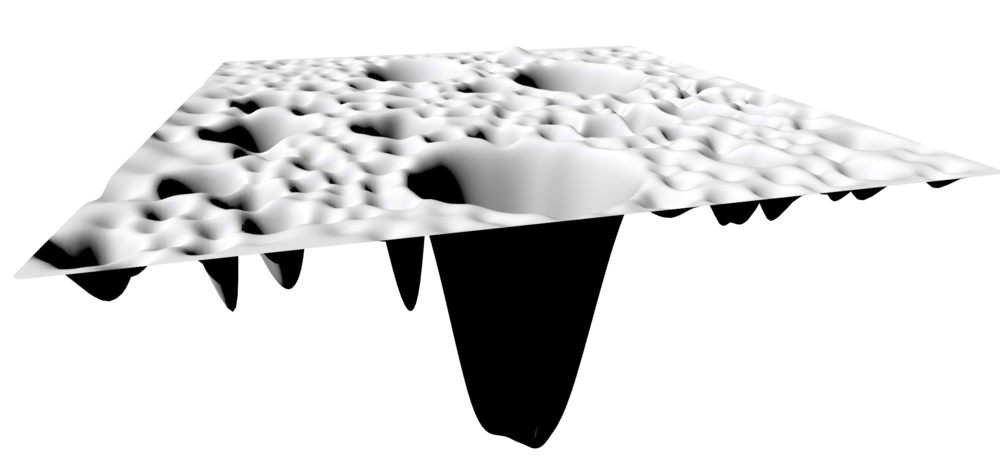

Rui's Reading Response

Quotes and Questions
Internet exists physícally and occupíes an ínconspícuous space on Earth; buried underground or stored under strict surveillance in a few data centers. There is something magícal about the whole Internet system: Internet datacenters light up líke modern temples, the deafening sound of the air-condítioning telling its stores in these secret centers whose limited access makes them more fascinating
Response
This article is more focused by the author on the concept of the Internet in a macro sense than the article we read in the first week, rather than on the rights of individual websites. It uses the architecture of the Web as an entry point to explain why the Internet is the concept that people interact with most in the modern era and uses this as a transition to draw out the subconscious of humans in the macro sense and the impact that group behavior has on it. Personally, I found this article very interesting and it provided me with a completely different perspective on the Internet itself than what I read in the first week. I was fascinated by the fact that the structure and existence of the Internet itself are not physical, or real world, and that it has become such a huge presence simply by people interacting with each other and giving feedback.